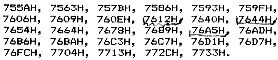
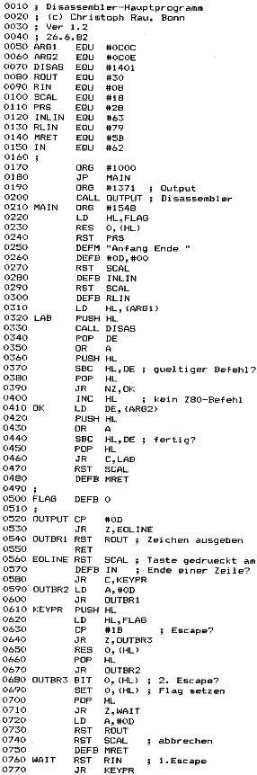

Nascom Journal |
Juli/August 1982 · Ausgabe 7/8 |
In der mc 4/82 war ein Z80-Betriebssystem für den TRS-80 veröffentlicht. Ein Teil davon ist ein Disassembler, der in Maschinensprache programmiert ist und auch im stand-alone betrieben werden kann. Dazu muß zuerst das Listing von 7207H bis 7739H eingetippt werden. Die Output-Routine des TRS-80 wird in 7571H aufgerufen, dort muß also statt CD 33 00 F7 00 00 (oder entsprechendes) eingetragen werden.
Der Disassembler wird als Unterprogramm mit der Einsprungadresse 7601H aufgerufen. Dabei muß die Adresse des Befehls, der disassembliert werden soll, in HL stehen. Nach einem <CR> werden die Adresse und der disassemblierte Befehl ausgegeben. Die Routine kehrt mit der Adresse des folgenden Befehls in HL zurück. Stand an der Adresse kein gültiger Z80-Befehl, dann bleibt HL unverändert.
Das gesamte Programmpaket benutzt einige Bytes ab 7000H für Flags etc., was man am besten in 7740H umändert. Dazu ersetzt man an den Adresse 7612H, 7644H und 76A5H 70 durch 72, bei 7611H 00 durch 40 und bei 7643H und 76A4H 01 durch 41.
Folgende Bytes sind High-Bytes von absoluten Adresse und müssen beim Reloziieren geändert werden (z.B. 62H abziehen, wenn das Programm ab 1000H stehen soll) :
Mit folgender Änderung schließlich wird erreicht, daß ein <CR> nicht zu Beginn sondern am Ende einer Zeile ausgegeben wird :
Bei 7602H 5 mal NOP (00) eintragen, bei 76D9H einen JP 773AH (C3 3A 77), und bei 773AH LD A,0D (3E 0D), CALL 756FH (CD 6F 75) und RET (C9) anhängen. Diese absoluten Adresse müssen natürlich beim Reloziieren mit beachtet werden.
Der folgende Disassembler benutzt den (reloziierten) Disassembler aus mc 4/82 ab 1000H bis 1540H. Es können Anfangs- und Endadresse für die Disassemblierung eingegeben werden, und das Programm kann durch ESCAPE angehalten, durch nochmaliges ESCAPE verlassen werden. Einsprungadresse ist 1000H.
Suche folgende Programme:
Toolkit, NASDIS mit DEBUG
Biete folgende Programme in Original-PROMs an:
NASPEN, DIS-SYS, ASM (NAS-SYS)
UNICON 1.4 und NAS-SYS
K.Schieferdecker _____/_____ ab 18°° h
_____________. __ , ____ _____

| Seite 44 von 60 |
|---|